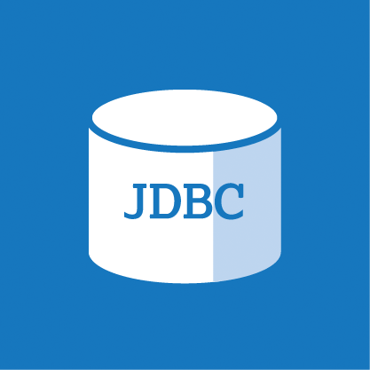

Sentimental Analysis using Deep Learning:
Description: Developed and deployed human emotion detection system using Neural Networks. It can capture the human facial images and can classify the emotion based on trained model
Link :
Recommender System for Shopping: A Design for Smart Malls
Description: I have presented an idea and paper for the above topic in ICDMAI 2018 (International Conference on Data management, Analytics and Innovation) which was held in Pune in Feb 2018 and my paper got selected and it got published in Springer.
Link :
MovieStar
Description:Aim of the project was to make an Android application and a web application which is able to stream the videos uploaded by the Indian Films Division. My Team headed by me provided complete solution end to end to problem statement in 36 hours.
Platform Used : Microsoft Azure Blob Storage, Microsoft Azure Video Indexer
Tools Used:


Department Website
Description: Aim of the project was to design a new interactive website for the department.
Tools Used:


Link 1 :
Link 2:
E-magazine
Description:Aim of the project was to design IT Department’s First Ever E-magazine with all events mentioned.
Tools Used:
Link :
BookMyStuff
Description: Aim of the project was to create a website to enable local shops to do business online i.e. to get orders online.
Tools Used:

Link :
Event Scheduler
Description: Aim of the project was to create an Android application to notify the students about the upcoming events in the college and to notify them.
Tools Used:
Link :
Mobile comparison site
Description: : Aim of the project was to create a website to compare the various brands of mobile phones with operating systems like Android, IOS, Windows.
Tools Used:

Link :
Designed with
by Suraj Mishra
Meet me On